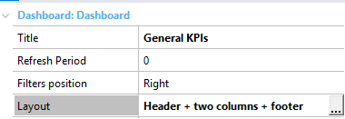
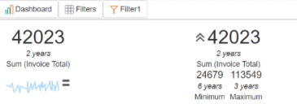
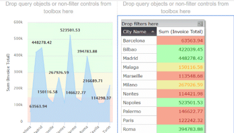
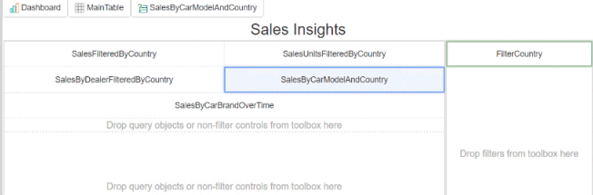
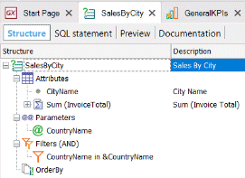
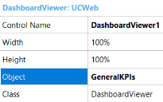
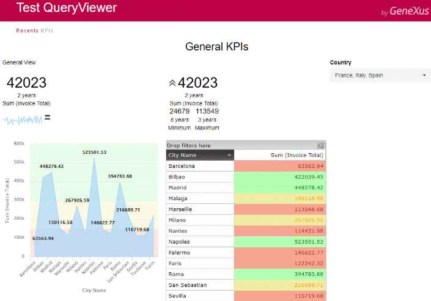

This document provides a walkthrough of the needed steps to design and run a Dashboard object. DescriptionThe example is based on the TestWebQueryViewer Knowledge Base, which includes concepts such as Countries, Cities, Cars, Brands, Sales, and Purchases. You can solve several scenarios with a Dashboard object, just let's focus on providing a General KPI panel for the management team. Before getting started you will need to go through these points:
If you want to skip this walkthrough and directly run the sample, download the KB and run the Home object where you can select the SalesDashboard sample. 1) Object creationCreate a new Dashboard object (Reporting Category) with the name GeneralKPIs. 2) Object definitionReview the dashboard properties and set the following: 
3) DesignThere is only one way to design your dashboard; you need to drag the elements from the toolbox you want to incorporate as part of the dashboard onto the form. Notice that the toolbox details the possible Dashboard widgets you may use. When selecting the objects widget, the following step is to associate it to an existing Query object or Data Provider object. For the case we will be using the following existing queries:
Notice that once you connect the object, it is automatically executed there and when needed filters are automatically created. Drag two query widgets to the"header section" and connect them with the Total Sales query and set the following properties ControlName: Object1
ControlName: Object2
The expected result is:  Now, add two new query widgets in the "central left section" and connect them to the SalesByCity query and set the following properties: ControlName: Object3
ControlName: Object4
This is the expected result.  Now, add the last query widget in the footer section and connect it to the SalesByTime query and set the following properties: ControlName: Object5
Right click on the dashboard and use the Collapse | Expand widgets to get a compacted view of you design  Notice that when clicking on a widget you will get a hint its relationship with others; the selected object is marked in blue and the associations will be marked in green:
4) Look & FeelFor this example we will not change the default look and feel, you need to use classes from the associated Theme for Web. 5) FiltersTo enhance the interaction in the object; it is important to add filters and connect them to the different queries; so every time you change a filter the associated queries will be updated. By default, filters are automatically created when connecting a query with parameters. For this case, the following filter was already created because the SalesByCity query includes the following condition: CountryName in &CountryName The output will detail the operation ========== SQL statement generation started ========== Generating GeneralKPIs_CountryName ... SQL statement generation Success Change the default filter configuration as you wish. Notice that, every time the Filter1 control is changed, the Query3 and Query4 will be updated. Control Name: Filter1
 Cool! your dashboard object is done. You have 5 query widgets associated to 3 queries and they are related through 1 filter. 6) DashboardViewerSo far, we refined the dashboard object on the IDE. Now, we need to include it in the application to be visible for the users. For a Dashboard object to be executable, it needs a special DashboardViewer control. This control needs to be dragged and dropped into a Web Panel object. So, create a Web Panel object called GeneralKPI. Drag and drop the DashboardViewer control from the toolbar and configure the control properties (set the correct dashboard on the Object property).  7) ExecutionThere you go, run the application (F5) and open the brand new Web Panel containing the dashboard! You should see something similar to the image below:  |
| Backlinks | |
| Category:Dashboard object | Toc:Reporting in GeneXus |